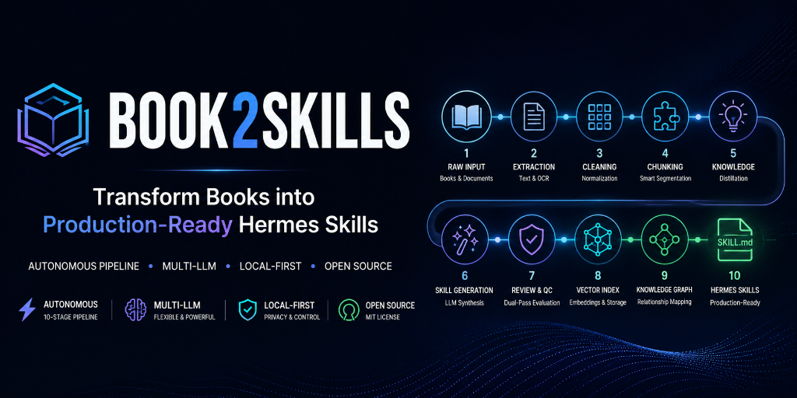

Book2Skills Pipeline v2

Autonomous, Intelligent Book-to-Skill Conversion Pipeline for Production AI Systems (OpenClaw, Claude, Codex, Hermes, etc.).
An end-to-end processing pipeline that converts unstructured books and complex domain documents (PDF, DOCX, MD, TXT) into production-ready AI Agent Skills (SKILL.md) compatible with AI frameworks such as OpenClaw, Claude, Codex, Hermes, and others. Features multi-provider LLM knowledge extraction, structured skill generation, semantic vector embeddings, persistent ChromaDB vector storage, autonomous LLM quality review, and knowledge graph relationship mapping.
🚀 Quick Start
# 1. Installation
pip install -e ".[all]"
# 2. Configuration Setup
cp .env.example .env
# Edit .env: e.g., set B2S_LLM__PROVIDER=ollama & B2S_LLM__BASE_URL=http://localhost:11434/v1 for local mode
# 3. 🎮 Launch Interactive Studio (Recommended — Zero Command Memory Required)
book2skills studio
# Or run via CLI directly:
book2skills run all --incremental # Process all books in data directory
book2skills export md # Export formatted SKILL.md bundles
book2skills search "marketing" # Search vector & keyword database
🎮 Interactive Studio (TUI)
The simplest way for anyone to operate the system—an interactive arrow-key terminal menu:
╔═════════════════════════════════════════════════════════════════════════╗
║ 📚 BOOK-TO-SKILLS STUDIO ║
║ Turn books into ready-to-use AI Agent Skills (OpenClaw, Claude...) ║
╚═════════════════════════════════════════════════════════════════════════╝
❯ Choose an action:
👉 🚀 Run pipeline — all books
📄 Run pipeline — single book
⚙️ Configure LLM Provider
📋 List available books
📦 List generated skills
🔍 Search skills database
📤 Export SKILL.md files
📊 View system statistics
🗑️ Clear pipeline cache
🚪 Exit Studio
- Interactive LLM Provider Wizard: Easily switch between OpenAI, Anthropic, Gemini, DeepSeek, OpenRouter, and Ollama directly from the terminal without manual
.envediting. - Live Progress Tracking: Visual progress indicators displaying active stages (
extract → clean → chunk → knowledge → skill_gen...). - Colorized Output: Rich summaries for books, skills, and extraction statistics.
- Zero Syntax Friction: Completely navigable using keyboard arrow keys and
Enter.
✨ Version 2 Architectural Upgrade Highlights
| Feature Area | v1 Implementation | v2 Enterprise Pipeline |
|---|---|---|
| Knowledge Extraction | Heuristic Regex parsing | Multi-LLM + JSON Schema Strict Enforcer (with fallback) |
| Semantic Tags | ❌ Empty / Missing | ✅ LLM generates 3–5 targeted semantic tags per skill |
| Category Classification | Defaulted to "general" | ✅ Intelligent multi-category classifier (10+ categories) |
| Skill Naming Standard | Inconsistent camelCase | ✅ Strict kebab-case naming specification |
| Data Provenance | Unlinked book_id | ✅ Explicit source_book & source_chapters mapping |
| Skill Sections | Empty workflow fields | ✅ LLM synthesizes full Workflows, Checklists, & Examples |
| SKILL.md Export | ❌ Unavailable | ✅ Automated AI Agent SKILL.md bundle exporter |
| Vector Embeddings | Non-semantic hash codes | ✅ Semantic vector embeddings (sentence-transformers) |
| Vector Database | Transient in-memory store | ✅ Persistent ChromaDB database storage |
| Quality Control | Superficial rules | ✅ Autonomous LLM Review Agents (1-10 scoring & audit) |
| Deduplication | Exact title matching | ✅ Semantic cosine vector similarity clustering (0.85+ threshold) |
| Knowledge Graph | ❌ None | ✅ Inter-skill relationship mapping & graph storage |
🏗️ The 10-Stage Pipeline Architecture
Extract ──► Clean ──► Semantic Chunking ──► Knowledge Extraction (LLM)
│
▼
Skill Gen (LLM) ──► Quality Review (LLM) ──► Deduplication (Cosine Similarity)
│
▼
Knowledge Graph ──► Vector Embeddings ──► Persistent Vector DB (ChromaDB)
Each stage is completely modular, independently executable via CLI (book2skills run stage <name> <file>), and backed by persistent checkpointing for seamless resume capabilities.
📋 Complete CLI Command Summary
book2skills run all --incremental # Process all books incrementally
book2skills run pipeline <file> # Process a single book file
book2skills run stage <name> <file> # Run a single isolated pipeline stage
book2skills list books # List discovered book files
book2skills list skills # List all generated skills
book2skills search "query" # Search skills by keyword / semantic content
book2skills export md # Export skills to SKILL.md format
book2skills show # Inspect current system configuration
book2skills clear -y # Clear pipeline cache silently
🔌 REST API Endpoints
| HTTP Method | Endpoint | Description |
|---|---|---|
POST |
/api/v1/pipeline/run |
Trigger asynchronous pipeline execution |
GET |
/api/v1/pipeline/status/{run_id} |
Retrieve real-time pipeline execution status |
GET |
/api/v1/skills |
List all generated skills with pagination & filters |
GET |
/api/v1/skills/{skill_id} |
Fetch full detailed payload for a specific skill |
DELETE |
/api/v1/skills/{skill_id} |
Remove a skill from storage |
GET |
/api/v1/books |
List available books in the data directory |
POST |
/api/v1/books/upload |
Upload a new book file (.pdf, .docx) |
GET |
/api/v1/search?q=... |
Perform high-speed search across all skills |
GET |
/api/v1/stats |
Return global system metrics & quality score averages |
GET |
/api/v1/health |
Health check endpoint |
🤖 Supported LLM Providers & Models
| Provider | Needs API Key? | Recommended Models | Primary Strengths |
|---|---|---|---|
| Ollama (Local) | ❌ No | qwen2.5:14b, llama3.1:8b |
100% Free, offline, private local execution |
| OpenAI | ✅ Yes | gpt-4o, gpt-4o-mini |
High throughput & strict JSON adherence |
| Anthropic | ✅ Yes | claude-3-5-sonnet, claude-3-5-haiku |
Superior procedural logic & synthesis |
| DeepSeek | ✅ Yes | deepseek-v3, deepseek-r1 |
Enterprise-grade reasoning at high efficiency |
| Google Gemini | ✅ Yes | gemini-1.5-pro, gemini-1.5-flash |
Large context window handling |
| OpenRouter | ✅ Yes | 200+ models accessible | Flexible model routing and benchmark testing |
Dual-Model Pairing Strategy:
- Small Model (B2S_LLM__MODEL_SMALL): Handles extraction, semantic chunking, & tag generation.
- Large Model (B2S_LLM__MODEL_LARGE): Handles skill synthesis, edge-case formulation, & quality review.
🧪 Testing Suite
# Run isolated unit tests
pytest tests/unit/
# Run integration tests (LLM & storage validation)
pytest tests/integration/
# Run end-to-end tests (full pipeline run)
pytest tests/e2e/
# Generate code coverage report
pytest --cov=src/book_to_skills
📁 Output Directory Layout
outputs/
├── skills/ # Skill JSON payloads
│ └── markdown/ # Production-ready SKILL.md bundles
├── knowledge_graph/ # Inter-skill relationship mappings
└── embeddings/ # Vector index snapshots
data/vector_store/ # Persistent ChromaDB vector database
🐳 Docker Deployment
# Build Docker image
docker build -f docker/Dockerfile -t book2skills .
# Run API & queue services via Docker Compose
docker-compose -f docker/docker-compose.yml up -d
📄 Full Documentation Suite
- 📘 Architecture Guide
- ⚙️ Configuration Guide
- 🛠️ Development Guide
- ❓ Troubleshooting Guide
- 📐 Architectural Decision Records (ADRs)
📝 Tech Stack Summary
Python 3.11 · FastAPI · Pydantic · Typer · sentence-transformers · ChromaDB · structlog · pytest · Docker · GitHub Actions
🙏 Acknowledgements
Book2Skills is built upon and inspired by exceptional open-source projects, research initiatives, and developer tools:
- 🧠 AI Agent Ecosystem (OpenClaw, Claude, Codex, Hermes, etc.): For pioneering the standardized
SKILL.mdspecification for AI agents. - ⚡ FastAPI & Pydantic v2: For high-speed web framework infrastructure and strict type enforcement.
- 🎨 Rich & Questionary: For enabling visually stunning terminal UIs and interactive menu controls.
- 🔍 ChromaDB & Sentence-Transformers: For semantic vector embeddings, indexing, and similarity clustering.
- 🤖 LLM Providers & Ecosystem: Ollama, OpenAI, Anthropic, Google Gemini, and DeepSeek for empowering autonomous knowledge extraction.
- 📚 Material for MkDocs: For delivering beautiful, accessible documentation UI for GitHub Pages.